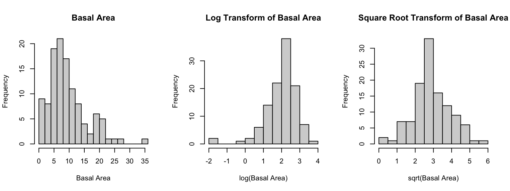
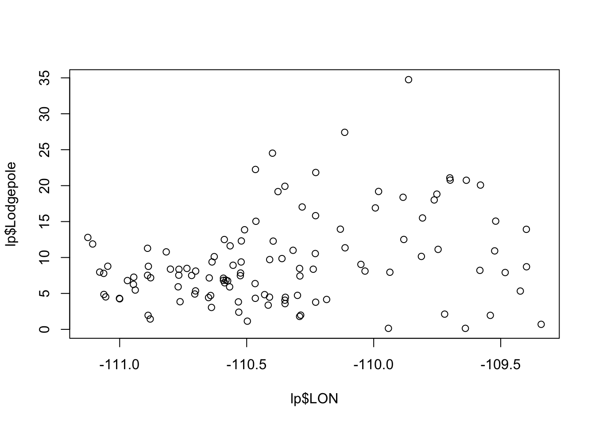
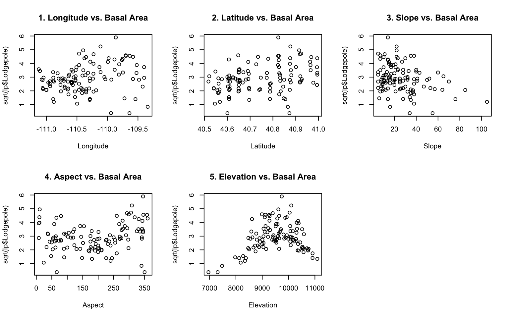
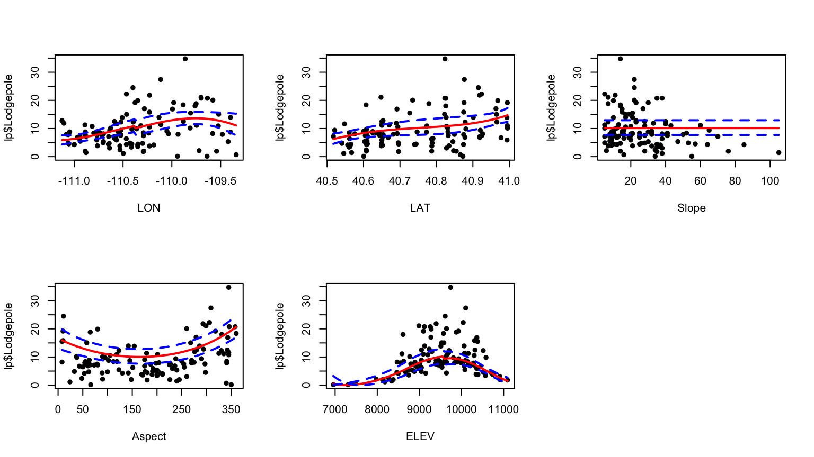
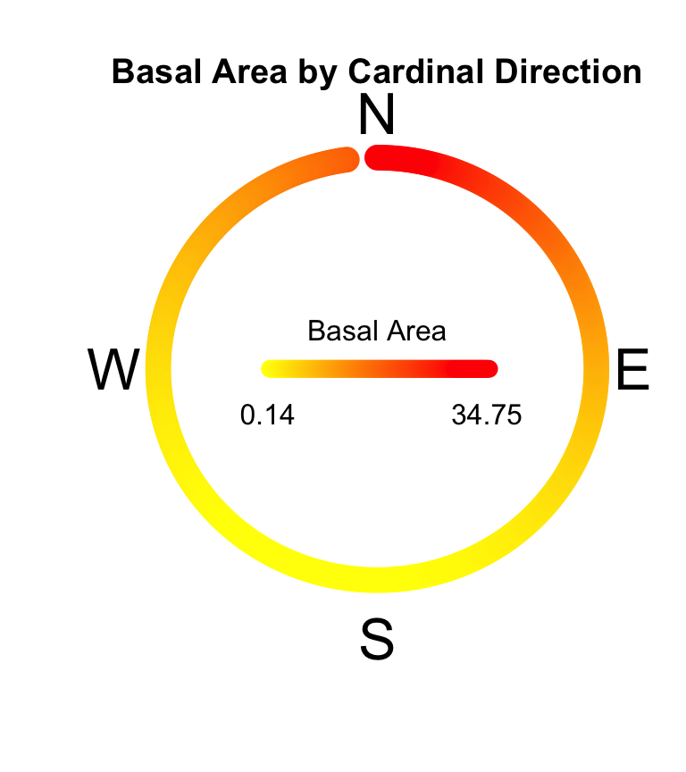

Midterm
Abstract
WRITE ME
1: Introduction
Context
We have a dataset representing the total basal size of all Lodgepole Pines within a plot, along with various environmental factors that may contribute to tree growth. We want to use these data to answer the following questions:
1) How is lodgepole growth is affected by its environment?
2) What environments are conducive to lodgepole growth?
3) Given the environmental data for areas the FIA was not able to survey, what is the predicted basal area of the trees in that area?
Data Exploration

Upon examining the data, we noticed the output variable (Basal Area) does not appear to be normally distributed @plot_test. As such, the normality assumption required for many modeling methods is not met and, if not addressed, generated models will not properly reflect the relationships between the input and output variables, and will have reduced predictive power. As such, we examined a log and a square root transform, and found that a square root transform resulted in result that better fits the normality assumptions. Thus, in models where normality is assumed, we will use the Square Root transform of Basal Area.
We also identified that several of the factors appear either to be non-linear, or possibly non-significant in determining Basal Area. Shown in @scatterplots are the scatter-plots of Basal Area plotted against each factor.

2: Methodology
2.1 Proposed Models
Model 1
For our second model we considered a Generalized Additive Model (GAM). To determine which variables we should include, we fit a sample GAM including all factors and reviewed the p-values to see which factors were significant.
We examined the log and square root transforms, as shown in Figure 1 - Middle and Figure 1 - Right respectively. While the peak of the log transform appears more closely normally distributed than the overall square root transformation, it has a long left tail. For this reason, we will be performing a square root transformation when creating our models.
Model 2
For our first model we created a LOESS (locally estimated scatterplot smoothing) model fitting
2.2 Model Evaluation and Selection
3: Results


Figure X: Shows the distribution of Basal Area in relation to the cardinal direction (North, East, etc.). Note that the largest Basal Areas tend to be on Northern-facing slopes.